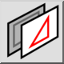

(Des-)selecione camada
Barra de ferramentas / Ícone:


Menu: Selecione > (Des-)selecione camada
Atalho: T, L
Comandos: selectlayerbyentity | tl
Barra de ferramentas / Ícone:


Selecciona ou desmarca todas as entidades na mesma camada que uma entidade escolhida.